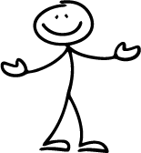

JO
GAME MANAGER
1
2
3
4
Welcome
Teams
The Game
Game Day

Welcome!
You can use the Game Manager to set up your game’s teams, customize the game puzzles and
create a planner to help you get ready to play the game! All of the information that you
create and your progress is automatically saved as long as you do not close the Game
Manager window, and you will receive a summary at the end, but feel free to jot some notes on your way
through the creation of your Adventure Game!
When you’re ready to get started, select “Continue” below!